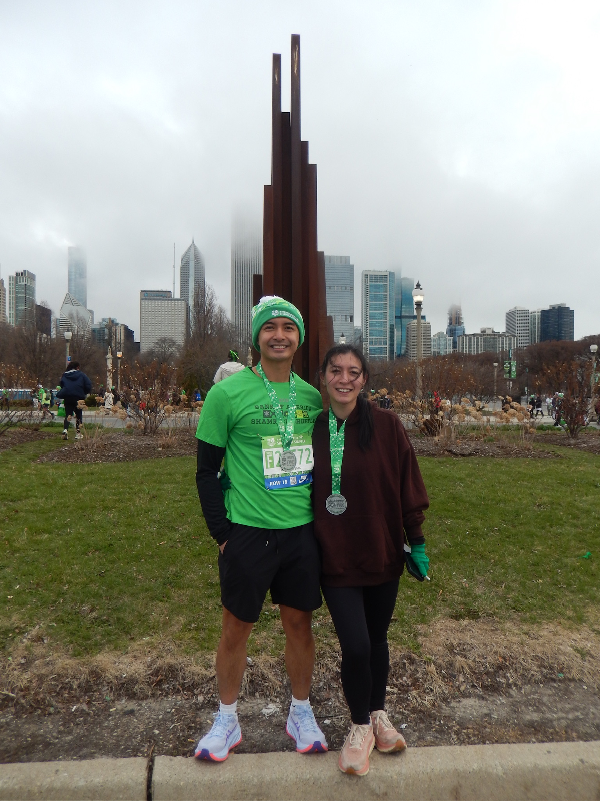

Teapot Still Life 18" x 24" — October 2025

Beethoven Portrait 18" x 24" — November 2025

Leona Portrait 18" x 24" — December 2025
I am deeply passionate about drawing and painting. In my free time, I enjoy using charcoal to create large composite drawings of life around me. I am currently working on a portrait of my cat, Louie.
Teapot Still Life 18" x 24" — October 2025
Beethoven Portrait 18" x 24" — November 2025
Leona Portrait 18" x 24" — December 2025
Running throughout the year keeps me grounded. I've ran the 2025 Chicago Hot Chocolat Run (15k) and recently the Shamrock Shuffle (8K). Throughut the week, I run 5-10 miles and one day hope to run a half marathon.

Hot Chocolate Run 15k - November 2025

Shamrock Shuffle 8k - March 2026
I read a lot. This section will get rotated. My favorites are listed below. I am currently reading Anne Franke's diary and Harry Potter Order of the Phoenix.

The Alignment Problem - Brian Christian
1982 - George Orwell

Frankenstein - Mary Shelley